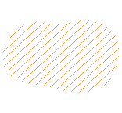

scroll down
かっこいいWebサイトを作りたいって思っている？Webデザインに興味があるけど、どこから始めればいいかわからないよね。
でも、大丈夫！
ここでは、Webデザインについての豆知識をまとめて、日本電子専門学校のWebデザイン科で実際に学ぶスキルや知識、全部このサイトでゲットできるよ。
毎日五分の時間だけを使って、Webデザインの基礎を身につけよう。一緒にWebデザインの豆を育てよう！
知ってる？HTMLはタイトルや見出しを表現するには<h○>タグを使う。○の中には1~6までの数字を入れる、一番重要な大見出しはh1、中見出しがh2、小見出しはh3のように、違う階層にある見出しを表示できる。基本的に「h1>h6」という重要度の順に並べるイメージで考える。

デザインルール
知ってる？「余白」は空白の部分であり、情報を効果的に配置し、読みやすさや視覚的なバランスを実現するために重要だ。情報のグループ化、階層化や重要な要素の強調を促進し、視覚的な混乱を減らす。また、余白をうまく使うことで、高級感や洗練された印象をを出したり、賑やかさを演出することもできる。
コーディング知識
HTML、CSS、JavaScriptってこんな役割を持ってる？
知ってる？HTMLとCSS、JavaScriptは全部Webサイトを作る時必要なプログラミング言語だけど、それぞれ違う役割を持っている。人の例にすれば、HTMLは人の骨格とで、人が必要なパーツを揃える言語だ。CSSは人の見た目やパーツの位置を調整する役割で、JavaScriptは人が動けるように働いてる。この三つはWebサイトを制作する上では必要なスキルなので、ぜひ理解してみてください！
日本電子専門学校のWebデザイン科は、楽しみながら最新のWebデザイン技術やトレンドが学べる場所だ。実践的なスキルを身につけたり、産学連携の授業によって、幅広い知識と経験が得られる。自分のアイデアを形にする方法を学んで、クリエイティブな仕事が好きな人にぴったりだよ！
将来Webデザイナー、エンジニア、Webディレクターなどを目指している人たち、ぜひ日本電子専門学校Webデザイン科をチェックしてみてね！